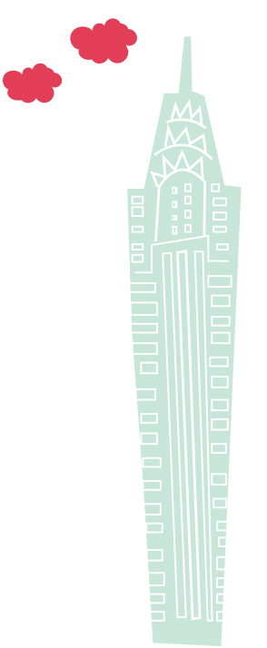

<article class="sponsorship-container">
  <h2>About</h2>
  <p>ManhattanJS is monthly meetup, that comes together on the second Wednesday to learn and hang out with each other.</p>

  <p>It commences at 7pm that includes techincal &amp; passion talks with various enterainment interludes. Admission is $10 and comes with food and beer/wine.</p>

  <p>ManhattanJS is currently organized by
    <a href="https://twitter.com/zeejab" target="_blank" class="text-link-blue">Lady Zahra</a>,
    <a href="https://twitter.com/copasetickid" target="_blank" class="text-link-blue">Rushaine McBean</a> and
    <a href="https://twitter.com/brendamarienyc" target="_blank" class="text-link-blue">Brenda Storer</a>
  </p>


  <h3>Sponsorship Packages</h3>

  <ul class="sponsorship-pricing">
    <li>
      <small>1 month</small>
      <strong>$500</strong>
      <small>Full Price</small>
    </li>
    <li>
      <small>3 months</small>
      <strong>$1,350</strong>
      <small>Save 10%</small>
    </li>
    <li>
      <small>6 months</small>
      <strong>$2,500</strong>
      <small>Save 20%</small>
    </li>
  </ul>

    During the event, sponsors have a chance to talk to attendees in a casual setting. Here are some other things you get with your sponsorship:

    <ul >
      <li>
        <b>Stage time:</b>
        Two minutes of stage time to talk about your company.
      </li>
      <li>
        <b>Free tickets:</b>
        Two tickets for engineers at your company.
      </li>
      <li>
        <b>Swag and merch:</b>
        We have a table setup right by check-in for you to lay down some swag and mingle with our attendees.
      </li>
      <li>
        <b>Branding:</b>
        We'll tweet about you the week of the event. Let us know what you want us to tell folks about!
      </li>
    </ul>


    <h3>Frequently Asked Questions</h3>

    <strong>How do I buy a sponsorship ticket?</strong>

    <p>You can purchase sponorship tickets through our normal ticketing page. We encourage all potential sponsors to reach out before buying their tickets so we can ensure that sponorship is the best fit for all parties involved. Simply reach out to us at <a href="mailto:team@manhattanjs.com" class="text-link-blue">team@manhattanjs.com</a>.</p>

    <strong>Will we get to talk to the attendees?</strong>

    <p>All sponsors are given a 2 minute segment in our intro to talk to attendees. If you would like customized slides during so please provide them before the day of the event. Otherwise, we'll have your logo included in our slides for you to talk in front of.</p>

    <p>We also encourage all sponsors to hang around after the talks to mingle with attendees.</p>

    <p>In addition to this, we will send a tweet out the week of the event to highlight your attendence.</p>

    <strong>Where does the sponsorship money go?</strong>

    <p>After every meetup we donate all remaining money to two amazing organizations:
    <a href="https://www.girldevelopit.com/" target="_blank" class="text-link-blue">Girl DevelopIt</a> &amp;
    <a href="https://scripted.org/" target="_blank" class="text-link-blue">ScriptEd</a>.</p>

    <strong>How many other sponsors will there be?</strong>

    <p>Each month we have up to three sponsors, all of who are given equal branding at our events. There are no tiered sponsorship packages.</p>

    <strong>There are no sponsorships left this month. Can we sponsor next month?</strong>

    <p>Yes! Send an email to <a href="mailto:team@manhattanjs.com" class="text-link-blue">team@manhattanjs.com</a> and we'll be happy to get you setup for the next available month.</p>

    <h3>Contact Us</h3>
    <p>If you have any additional questions reach out to us at
        <a href="mailto:team@manhattanjs.com" class="text-link-blue">team@manhattanjs.com</a>
    </p>
</article>


